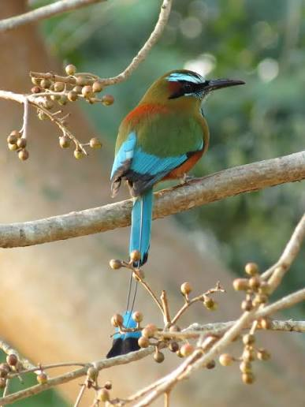
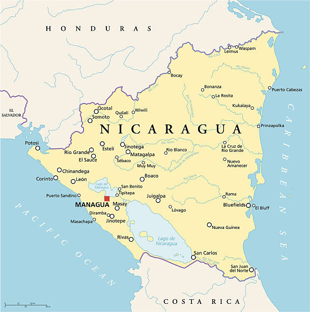
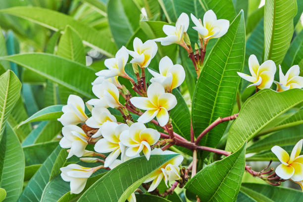
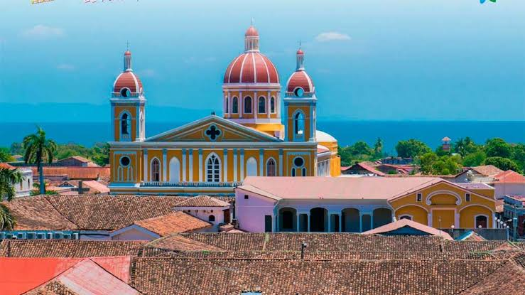
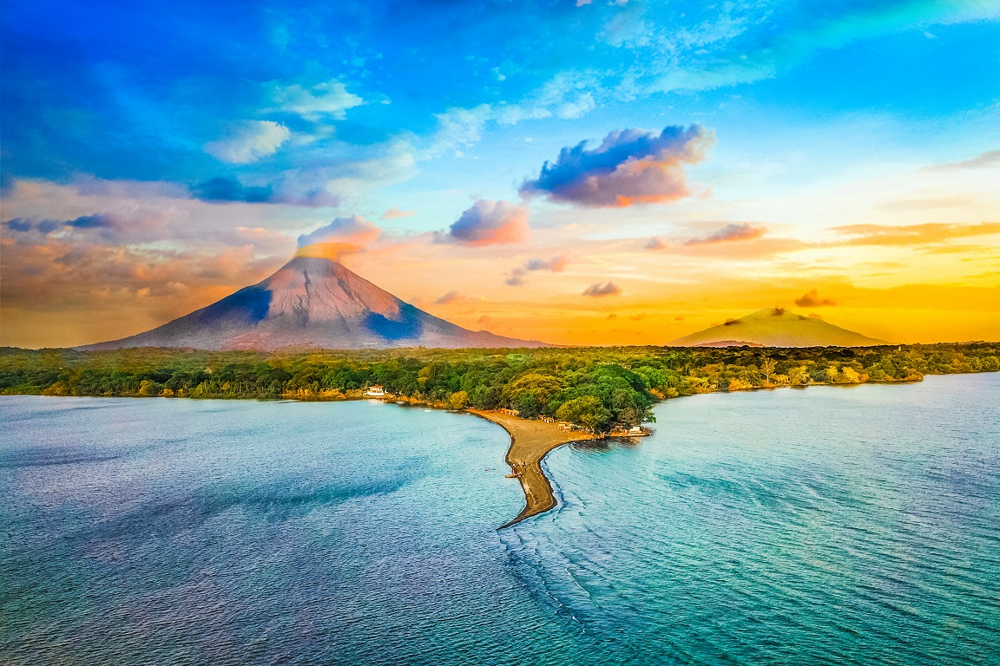

El Guardabarranco

Ave nacional de plumaje resplandeciente en tonos verdes y azules con característicos extremos en las plumas de la cola.

Es el país más extenso de América Central con 130,373 km², famoso por sus gigantescos lagos y cadena de volcanes activos.

Ave nacional de plumaje resplandeciente en tonos verdes y azules con característicos extremos en las plumas de la cola.

Flor nacional de color blanco con centro amarillo, reconocida por su fragante aroma y presencia en el territorio.

Una de las ciudades coloniales más antiguas de América Continental, famosa por su arquitectura y plaza central.

Isla conformada por dos majestuosos volcanes (Concepción y Maderas) en medio del Lago Cocibolca.